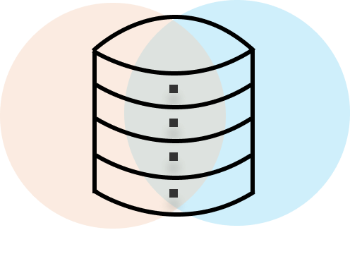

Evan Hu
Interview Query

Data Science/NLP Intern
Aug 2020 – Present
UCSD
Research Assistant
Sep 2019 - Aug 2019
HoverCam
Software Engineer Intern
May 2019 - Jul 2019
Research
In this work, we propose distinct model-agnostic benchmark perturbations of images in order to investigate the resilience and robustness of different network architectures. Our findings provide direction for future understanding of residual connections and depth on network robustness.
See PaperMovementSpace
A concept website meant to be a platform for the inspiration and creation of social movements. Built using PostgreSQL, Ruby on Rails, and ReactJS for my first hackathon.
Link